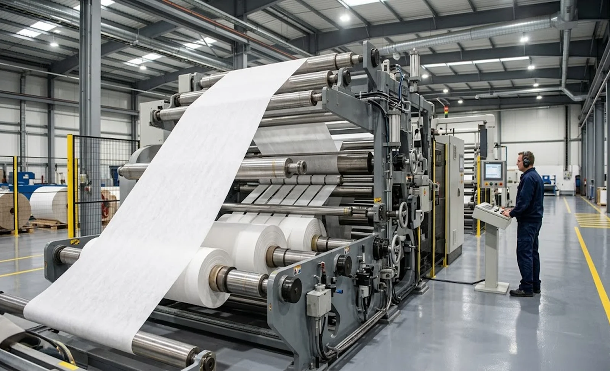
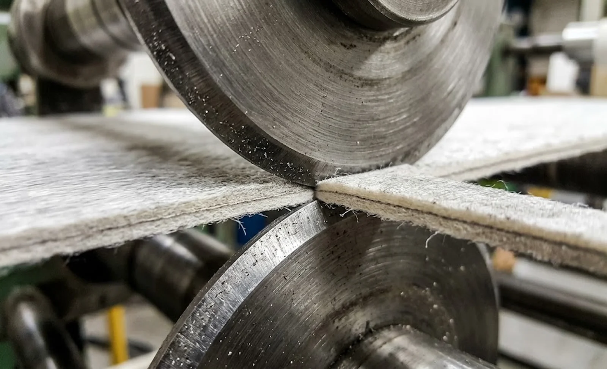

Published October 10, 2026 | By HDPTH Technical Editorial Team

Hygiene backsheets, medical packaging substrates, SMS gowns and bonded wipe materials all share one converting reality: the product is a laminate, and every layer brings its own physics. The film ply cuts cleanly but stretches; the nonwoven ply cuts fuzzily but tolerates tension; the bond line between them fails visibly if the edge is abused. A slitter rewinder specified for plain spunbond will often run laminates — badly. Edge delamination, fuzz that glues to idlers, film shards in the product and rolls that wind soft at the edges are the typical symptoms. This guide explains what a buyer must specify differently for laminates, and how to prove the choice with a trial before the purchase order.
What laminates demand from a slitter rewinder
Start from the layers, not the machine. List each ply with its basis weight, extensibility and the tension it tolerates, plus the bond type and its strength. The conversion window of the laminate is the intersection of these limits: the film layer usually sets the ceiling, the nonwoven layer sets the floor for clean cutting, and the bond line punishes nip pressure and web flutter. The mechanical consequences are concrete. Laminates need a shorter web path than single webs so the plies cannot wander apart after slitting; they need nip points fewer and gentler; and they benefit from the elastic-web handling discipline described in our elastic web tension guide. A supplier who cannot state the tension window for your laminate has not engineered the machine for it yet.
Knife and slitting method selection
Method choice decides edge quality more than any other single item:
- Shear slitting — the default for film-to-nonwoven and SMS-type laminates. The scissor action cuts all plies cleanly and handles speed, but needs correct knife geometry, overlap and side pressure per the knife clearance guide.
- Razor slitting — effective for thin, well-bonded laminates at moderate speeds; the simplest and cheapest option, with a low consumable cost per the knife life analysis.
- Score slitting — generally avoided on laminates: the crush action loads the bond line perpendicular to its strength and produces dust.
Whichever method is chosen, ask for the knife configuration to be proven on your laminate during the trial, not assumed from a similar product. Bond strength, not basis weight, is the variable that changes the answer.

Tension and nip control for layered webs
Tension strategy for laminates is a compromise engineered deliberately, not a default. Closed-loop control with load cells is effectively mandatory — open-loop dancer settings that work on one laminate will be wrong on the next recipe. Keep the web path between slitting and rewind short and support the cut strands close to the knives so the plies cannot separate laterally. On wide machines producing many rolls, specify differential rewind shafts so each roll takes the torque it needs; the logic in our differential shafts guide applies doubly when layer thickness varies across the web, which laminates always do. Where a soft-touch edge is critical — wipes, medical packaging — the lay-on roller settings in our nip pressure guide should be verified for the laminate, not the parent web.
Edge quality, dust and delamination limits
Define “acceptable edge” before the machine is quoted. The common laminate defects are layer separation at the slit edge, fuzz from the nonwoven ply, film shards on bonded film layers, and dust that migrates to idlers and into finished rolls. Each is controllable: separation responds to knife geometry and web path, fuzz to blade sharpness and tension, dust to the extraction measures in our dust extraction guide. Write the criteria as measurable classes — fuzz rating against a reference photo, no visible delamination at a stated magnification, dust agreed against a retained sample — and attach them to the edge quality acceptance plan. Vague criteria produce vague machines; measured criteria produce acceptance tests with a pass and fail.
Machine configuration and trial validation
The final step is proving the configuration on your material. A structured material trial runs your production laminate at production speed on the offered machine class, adjusts knife geometry, tension zones and rewind torque with the supplier’s engineers present, and records the resulting settings as the baseline for the FAT. Inspect the trial edges under the same criteria you will use at acceptance, and check roll formation with the hardness methods in our roll hardness guide. For hygiene and medical laminates, also confirm that the machine layout suits your downstream flow using the principles in our line layout guide. A machine bought on trial evidence is bought once; a machine bought on catalogue data is bought twice.
Converting laminated nonwovens?
Send HDPTH your laminate construction — plies, bond type, widths and speed — and we will recommend the slitting method, tension architecture and rewind configuration for it, then prove the setup on trial cuts of your material.
Submit Your Project InquiryFrequently asked questions
What makes laminated nonwovens harder to slit than single-layer webs?
The layers respond differently to cutting and tension. A film layer stretches and cuts cleanly at low tension while the nonwoven layer needs higher tension to cut without fuzz; a bond line between them can separate if tension or nip is excessive. The machine must therefore hold a compromise tension zone and cut all layers simultaneously with one geometry — which is why laminate converting punishes underspecified tension and knife systems more than single-web work.
Which slitting method suits laminated nonwovens best?
Shear slitting handles most film-to-nonwoven and SMS-type laminates because the scissor action cuts every layer cleanly at moderate loads. Razor slitting works for thin, well-bonded laminates and lower speeds, and remains the simplest option for hygiene substrates. Score slitting is generally avoided on laminates because the crush action stresses the bond line. The decisive test is trial cutting: layer separation and edge fuzz show up immediately on a sample machine.
How should tension be set for a laminate with a film layer?
Start from the most tension-sensitive layer — usually the film — and verify the nonwoven still cuts cleanly at that level. Specify closed-loop tension control with load cells, and keep the web path short between the slitting and rewind points so cut layers cannot wander relative to each other. On wider machines, differential rewind shafts let each finished roll take its own torque, which compensates for the thickness variation laminates typically carry.
What edge defects should we expect and specify against?
The typical laminate defects are layer separation at the edge, fuzz from the nonwoven ply, film shards on bonded film layers and dust accumulation. Write measurable acceptance criteria into the contract: a defined fuzz class, no visible delamination at magnification, and dust levels agreed against a reference sample. Then verify these criteria during the machine trial and at FAT on your material, not on the supplier’s test web.
Why is a machine trial so important for laminates?
Because laminate behaviour cannot be predicted from datasheets: bond strength, layer extensibility and dust behaviour only show under real cutting conditions. Run your own production laminate at production speeds on the offered machine, measure edge quality and roll formation, and adjust knife geometry and tension zones with the supplier’s engineers present. The results decide the configuration you actually buy — and become the acceptance reference at FAT.